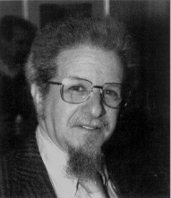

Please note: the AAS Obituaries are temporarily being hosted on this website while their full content is being ingested into the PubPub publishing platform newly adopted by the Bulletin of the American Astronomical Society. When the migration is complete, your existing links will take you to the final, migrated content. Contact peter.williams@aas.org with any questions.
Barry M. Lasker (1939-1999)
On 10 February 1999, Barry M. Lasker died suddenly following a heart attack. Barry was an astronomer for almost 40 years, playing an important role in the creation of two of the world's most highly-respected observatories, the Cerro Tololo Inter-American Observatory in Chile, and the Space Telescope Science Institute. His work on the Guide Star Catalog and the Digitized Sky Survey significantly influenced the entire field of observational astronomy. Just before his untimely death, he learned that the American Astronomical Society had awarded him the 1999 Van Biesbroeck Prize in recognition of his long-term service to the scientific community. Barry Lasker was born on 12 August 1939 in Hartford, Connecticut. He began his career with a Bachelor of Science degree in physics from Yale in 1961, quickly followed by a Master's degree in 1963 and a PhD in 1964 in astrophysics from Princeton. After a postdoctoral position at the Hale Observatories in Pasadena from 1965 to 1967, he became a professor of astronomy at the University of Michigan, where he was acknowledged as an excellent teacher, holding this position from 1967 to 1969. He was offered an opportunity to move to a remote, undeveloped part of Chile as one of the first astronomers for a new observatory that was to provide the U.S. astronomical community with facilities in the Southern Hemisphere. During this time, Barry was as comfortable with a soldering iron and wrench as he was performing his own observations on the interstellar medium. He was one of the early pioneers in using computers to control telescopes and instruments. In addition to his essential role in the observatory's construction and commissioning, he and his wife Sharon became an integral part df the local community. When their children, Zephrin and Alida, became old enough to attend school, they were instrumental in the creation of an American-style English-speaking school that was open to all local residents. It has since flourished and now has an enrollment of over 700 students and is highly respected. In 1979, he began work on a major competitive proposal to NASA for the Association of Universities for Research in Astronomy (AURA) to create a research-oriented institution that would be responsible for the operation of the Hubble Space Telescope. Following its successful selection, he moved to Baltimore as one of STScI's first scientists in 1981. His major task was to design a system for the measurement of the positions of stars that the telescope could lock onto and guide with for every observation — Hubble recently exceeded 250,000 observations! With typical foresight, he organized an effort to obtain photographic plates of the entire sky, build a machine to digitize them and use image-processing software to detect and measure 20 million stars over the entire sky.
This Guide Star Catalog was a tremendous success and since publication has become the de facto standard for the operation of most telescopes and space missions. Recognizing that the digitized images were also of great value to the community, he was instrumental in arranging for publication of these data on a set of CD-ROMs. The availability of the Digitized Sky Survey has revolutionized how astronomers in this information age plan observations or find an optical counterpart to sources detected at other wavelengths. Anyone with a computer, professional or amateur astronomer, teacher or student, can quickly display, manipulate, and measure an image of any part of the sky. The value of this survey was demonstrated most notably by using the data to investigate the progenitor system of Supernova 1987A and the recent optical identification of a gamma-ray burst source.
Always following his thoughts to a logical conclusion, he realized that it was necessary to measure new photographic survey plates. In combination with the original work, it would allow the creation of a much larger and more useful catalog of over 2 billion objects. This would allow serious research on the structure of the Galaxy by determining the colors and motions of stars, investigate the spatial distribution of galaxies and galaxy clusters, and provide a tool for the operation of the next generation of ground-based telescopes and space missions. When it became clear that funding was inadequate, he gradually created an international consortium of partners in order to carry out this goal. Work on both the Digitized Sky Survey II and the Guide Star Catalog II is currently in progress and will be completed in 2001. He was always interested in promoting science in education, and took an active interest in helping wherever he could. Whenever possible, he mentored bright young high school students who came to STScI for summer positions, and recruited local college students for part-time employment, giving them challenging and interesting tasks. He was also active at a local school, where he helped them refurbish and set up a student observatory. Barry was a reserved and modest man. He was both a gentleman and a scholar in the truest sense of the expression, treating everyone with respect and giving freely of his accumulated wisdom and extensive knowledge. In addition to being a brilliant, dedicated and selfless scientist, Barry was a genuinely good person. He was committed to his family, and interested in and helpful to his many friends and colleagues. He was a professional mentor to many young scientists, providing advice and usually ending by quoting some literary passage, frequently from Dr. Seuss, to illustrate his point. His vision and kindness, his scientific and private personality will be greatly missed, but his memory will live on in the hearts and minds of those who were privileged to know him and work with him.
STScI Newsletter, June 1999
Obituary written by: Dave Soderblom (Editor, STScI Newsletter, June 1999)
BAAS Citation: BAAS, 1999, 31, 1603
SAO/NASA ADS Bibcode: 1999BAAS...31.1603S